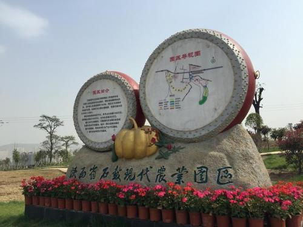

建站初衷

我们创建这个网站的初衷是： 根据国家统计局的数据统计，中国到2018年农业人口数还有5.6亿，在2016年的时候我们还有6个多亿，农业人数大概占到总体人口的49%。 然而对标美国的数据，美国在1880年，他们农业人口数大概在49%左右。到了2013年，美国的农业人口数大概是1.03%。 再来看看日本，日本的农业人口数，它在1955年，它的人口数是49%。日本到了2013年，它的农业人口数大概在4.9%左右，也就是大约5%。 因此整体来说我们农业从业人数正在快速的下降。 中国是一个人口大国，拥有14亿人民，虽然目前国内粮食种植正走向科技化、机械化、智能化，但是从整体来看，中国人口当中50%是农村人口，如果有10%的农村人口在从事农业活动，那么就是1.4亿人。 粮食问题涉及的是国家战略角度上农业是重中之重。新中国成立之时，毛主席就说过这样的一段话。 手中有粮，心中不慌。脚踏实地，喜气洋洋。 俗话说“手中有粮，心中不慌”，无论古今，吃饭都是大事，有粮才好过日子 因为中国是农业生产大国，而作为年轻一代的我们有义务让人们了解农业了解中国的农业。该网站全面的介绍陕西近些年来农业的发展以及国家精准扶贫的一些政策的实施